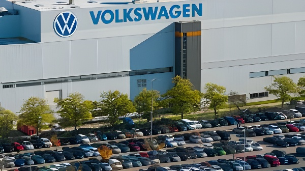

Pendant des décennies, l'automobile a été le symbole de la puissance industrielle allemande — un secteur générant 5 % du PIB, employant plus de 800 000 personnes et structurant des régions entières. Depuis 2023, ce pilier est ébranlé par une convergence de crises sans précédent : concurrence frontale des constructeurs chinois, transition vers l'électrique mal anticipée, coûts énergétiques élevés, droits de douane américains et effondrement de la demande en Chine. Volkswagen, BMW, Mercedes et leurs équipementiers affrontent un choc structurel qui redessine les contours de l'industrie — et de l'Allemagne tout entière.
Le modèle économique qui a fait la fortune de l'automobile allemande reposait sur trois piliers : des véhicules premium à forte valeur ajoutée, une chaîne de sous-traitance intégrée et un accès privilégié au marché chinois. En 2023–2024, les trois s'effondrent simultanément. La Chine, qui représentait jusqu'à 40 % des ventes de Volkswagen et des parts comparables pour BMW et Mercedes, n'est plus une rente : les constructeurs locaux — BYD, SAIC, Geely — ont rattrapé techniquement l'industrie allemande et s'imposent désormais sur les segments électriques où les marques allemandes étaient absentes ou en retard.
Parallèlement, la demande européenne de véhicules électriques a décéléré brutalement en 2024 après la fin des subventions à l'achat en Allemagne (supprimées en décembre 2023 par la coalition Scholz lors de la crise budgétaire). L'industrie s'est retrouvée prise en tenaille : trop engagée dans la transition électrique pour les clients thermique-fidèles, mais insuffisamment compétitive sur le segment électrique face aux Chinois.
Le cas Volkswagen concentre toutes les tensions de la crise. En septembre 2024, la direction annonce l'abandon de l'accord de protection de l'emploi en vigueur depuis 1994 — une première dans l'histoire du groupe — et évoque la fermeture possible de trois usines en Allemagne. En novembre 2024, après des semaines de grèves menées par l'IG Metall, un accord est trouvé : 35 000 suppressions de postes d'ici 2030, une réduction des salaires et la fermeture évitée pour l'instant. Mais la paix sociale est fragile et les syndicats parlent d'une « capitulation contrainte ».
La crise VW est révélatrice d'un enjeu plus large : dans des régions comme la Basse-Saxe (où l'État est actionnaire de VW à 20 %), l'automobile est un quasi-monopole économique. La reconversion industrielle, si elle doit avoir lieu, n'a pas d'équivalent territorial en termes d'emplois et de savoir-faire.
Suppression des subventions à l'achat de véhicules électriques en Allemagne. Les ventes d'électriques chutent de 36 % en janvier 2024.
L'UE instaure des droits de douane compensatoires sur les véhicules électriques chinois (jusqu'à 38,1 %). Berlin vote contre, craignant des représailles sur les exportations allemandes en Chine.
Volkswagen rompt l'accord de protection de l'emploi de 1994. Annonce de possibles fermetures d'usines en Allemagne.
Grèves chez VW. Accord : 35 000 suppressions d'ici 2030, réduction de 10 % des salaires, pas de fermeture immédiate d'usines.
Donald Trump annonce des droits de douane de 25 % sur les voitures importées aux États-Unis. Coup dur pour BMW (Mini) et Mercedes, qui exportent depuis leurs usines européennes.
Le gouvernement Merz annonce un plan de soutien à la filière : prime à la conversion, investissements en R&D batterie, assouplissement des objectifs CO₂ 2035 au niveau européen.
La montée en puissance des constructeurs chinois n'est pas un simple dumping tarifaire : c'est une rupture technologique. BYD, premier constructeur mondial de véhicules électriques depuis 2023, propose des modèles au même niveau de finition que les marques allemandes pour 20 à 30 % moins cher, grâce à une intégration verticale totale (batteries, semi-conducteurs, logiciels). SAIC, Geely ou Nio s'implantent en Europe avec des réseaux de distribution et des centres de R&D en Allemagne même.
La réponse de l'UE — droits de douane compensatoires jusqu'à 38 % adoptés en juin 2024 — a été combattue par Berlin, révélant la contradiction fondamentale du secteur : les constructeurs allemands ont besoin de protections commerciales en Europe, mais craignent les représailles chinoises sur leur marché le plus lucratif. C'est VDA (l'association des constructeurs) et les lobbies industriels qui ont le plus pesé contre ces tarifs.
| Constructeur | Suppressions annoncées | Principal marché menacé |
|---|---|---|
| Volkswagen Group | 35 000 postes d'ici 2030 | Chine (−15 % ventes 2024) |
| BMW | Gel des recrutements, plan d'économies 2 Md€ | USA (droits de douane 25 %) |
| Mercedes-Benz | Réduction des effectifs de 10 % | Chine + segment premium |
| Bosch (équipementier) | ~5 500 postes | Composants thermiques |
| Continental | ~7 000 postes | Pneumatiques & électronique |
La crise automobile allemande est aussi une crise de la stratégie. Les grands groupes ont massivement investi dans les motorisations thermiques jusqu'au début des années 2010, pariant sur la durabilité du diesel — y compris après le scandale du « Dieselgate » (2015). Le virage électrique, pris tardivement et sous pression réglementaire européenne (objectif zéro émission 2035), a été mal calibré : les plateformes électriques (MEB de VW, notamment) sont plus coûteuses à produire que leurs équivalents chinois, et les réseaux de recharge insuffisants ont freiné l'adoption.
Le gouvernement Merz, sous pression des syndicats et des Länder industriels, négocie au niveau européen un assouplissement de l'objectif 2035 (interdiction des moteurs thermiques). La Commission a accepté une révision partielle incluant les carburants synthétiques (e-fuels), mais la trajectoire reste incertaine et le retard technologique sur les Chinois dans la batterie ne se comble pas par décret.
« Nous sommes à un tournant. Soit l'industrie automobile allemande se réinvente, soit elle devient un sous-traitant de marques asiatiques. »
— Oliver Zipse, PDG de BMW, Forum économique de Davos, janvier 2025« La suppression des primes électriques en décembre 2023 a été l'une des décisions les plus contre-productives de la politique industrielle allemande des vingt dernières années. »
— Ferdinand Dudenhöffer, directeur du CAR Institute, Duisbourg, mars 2024Le gouvernement Merz est confronté à une injonction contradictoire : ne pas laisser s'effondrer la base industrielle de régions entières, mais éviter de subventionner des technologies condamnées. Son approche combine un soutien ciblé à la R&D (batteries à l'état solide, hydrogène pour le transport lourd), une pression sur l'UE pour adoucir les normes CO₂ à court terme, et un appel aux constructeurs à relocaliser des capacités de production sur le sol allemand en échange d'accès au marché public.
La question des droits de douane américains (25 % sur les voitures importées, annoncés par Trump en février 2025) complique encore l'équation : BMW produit des SUV à Spartanburg (Caroline du Sud) pour les réexporter en Europe et en Asie — cette chaîne est directement menacée. Les constructeurs réclament un accord commercial UE–USA que Merz place parmi ses priorités diplomatiques, sans résultat concret à ce jour.
La crise du secteur automobile n'est pas seulement industrielle : elle est le révélateur d'une crise de modèle pour l'Allemagne tout entière. Le pays a construit sa prospérité sur des exportations à haute valeur ajoutée vers des marchés émergents — et ces marchés se referment ou se dotent de leurs propres champions. La transition énergétique, l'instabilité géopolitique et la révolution numérique ont rendu obsolète un modèle économique qui paraissait indestructible. La réponse — réindustrialisation, investissement en R&D, formation des travailleurs — est connue. Mais elle exige du temps que les marchés et l'opinion publique n'accordent pas volontiers. L'automobile restera un test décisif de la capacité de l'Allemagne à se transformer sans se déchirer.
Jahrzehntelang war das Auto das Symbol der deutschen Industriemacht — ein Sektor, der 5 % des BIP erwirtschaftete, über 800 000 Menschen direkt beschäftigte und ganze Regionen strukturierte. Seit 2023 steht diese Säule unter einem beispiellosen Druck: chinesische Konkurrenz, verpasste Elektrowende, hohe Energiekosten, US-Zölle und Nachfrageeinbruch in China. Volkswagen, BMW, Mercedes und ihre Zulieferer stehen vor einem strukturellen Schock, der die Industrie — und Deutschland — neu formen wird.
Das Geschäftsmodell der deutschen Automobilindustrie beruhte auf drei Säulen: Premium-Fahrzeuge mit hoher Wertschöpfung, eine integrierte Zuliefererkette und privilegierter Zugang zum chinesischen Markt. In den Jahren 2023–2024 brechen alle drei gleichzeitig ein. China, das bis zu 40 % der Volkswagen-Verkäufe ausmachte, ist keine Rente mehr: Lokale Hersteller wie BYD, SAIC und Geely haben die deutschen Marken technologisch eingeholt und dominieren nun das Elektrosegment, in dem die Deutschen fehlten oder in Rückstand geraten waren.
Gleichzeitig brach die europäische Nachfrage nach Elektrofahrzeugen 2024 abrupt ein, nachdem die Kaufprämien in Deutschland im Dezember 2023 abgeschafft worden waren. Die Industrie geriet in die Zange: zu weit in der Elektrowende für Verbrenner-treue Kunden, aber zu wenig wettbewerbsfähig im Elektrosegment gegenüber den Chinesen.
Der Fall Volkswagen bündelt alle Spannungen der Krise. Im September 2024 kündigt die Konzernleitung die Aufkündigung des seit 1994 geltenden Beschäftigungssicherungsvertrags an — ein Novum in der Geschichte des Konzerns — und deutet mögliche Werksschließungen in Deutschland an. Im November 2024 wird nach wochenlangen Streiks der IG Metall ein Tarifkompromiss erzielt: 35 000 Stellenstreichungen bis 2030, Lohnkürzungen, vorerst keine Schließungen. Doch der soziale Frieden ist brüchig.
Die VW-Krise verdeutlicht ein größeres Problem: In Regionen wie Niedersachsen — wo das Land mit 20 % an VW beteiligt ist — ist die Automobilindustrie ein wirtschaftliches Quasi-Monopol. Ein industrieller Wandel ohne Äquivalent an Arbeitsplätzen und Know-how ist schwer vorstellbar.
Streichung der Kaufprämien für Elektrofahrzeuge in Deutschland. E-Auto-Verkäufe brechen im Januar 2024 um 36 % ein.
EU-Ausgleichszölle auf chinesische Elektroautos (bis zu 38,1 %). Berlin stimmt dagegen, aus Angst vor Vergeltungsmaßnahmen Chinas.
VW kündigt den Beschäftigungssicherungsvertrag von 1994. Mögliche Werksschließungen werden angedeutet.
Streiks bei VW. Einigung: 35 000 Stellen bis 2030, Gehaltssenkungen um 10 %, vorerst keine Schließungen.
Trump kündigt 25 % Zölle auf importierte Autos an. Schwerer Schlag für BMW und Mercedes.
Regierung Merz kündigt Industriepaket an: Umstiegsprämie, F&E-Investitionen in Batterietechnik, Druck auf EU zur Lockerung der CO₂-Ziele 2035.
Der Aufstieg chinesischer Hersteller ist kein einfaches Dumping, sondern ein technologischer Umbruch. BYD, seit 2023 weltgrößter E-Autobauer, bietet Modelle auf dem Qualitätsniveau deutscher Marken zu 20–30 % günstigeren Preisen — dank vollständiger vertikaler Integration (Batterien, Halbleiter, Software). SAIC, Geely oder Nio bauen in Europa Vertriebsnetze auf und errichten sogar F&E-Zentren in Deutschland.
Berlins Widerstand gegen die EU-Zölle enthüllt den grundlegenden Widerspruch der Branche: Die deutschen Hersteller brauchen Handelsschutz in Europa, fürchten aber chinesische Vergeltung auf ihrem profitabelsten Markt. Der VDA (Verband der Automobilindustrie) hat aktiv gegen die Zölle lobbyiert.
| Hersteller | Angekündigte Stellen | Hauptgefährdeter Markt |
|---|---|---|
| Volkswagen Group | 35 000 bis 2030 | China (−15 % Verkäufe 2024) |
| BMW | Einstellungsstopp, 2 Mrd€ Einsparplan | USA (25 % Zölle) |
| Mercedes-Benz | 10 % Stellenabbau | China + Premiumsegment |
| Bosch (Zulieferer) | ~5 500 Stellen | Verbrenner-Komponenten |
| Continental | ~7 000 Stellen | Reifen & Elektronik |
Die Krise ist auch eine Strategiekrise. Die deutschen Konzerne investierten massiv in Verbrennungsmotoren bis Anfang der 2010er Jahre und setzten auch nach dem Dieselskandal (2015) auf den Diesel. Die Elektrowende, spät und unter EU-Regulierungsdruck vollzogen (Ziel: Null-Emissionen 2035), war schlecht kalibriert. Die Elektro-Plattformen (z. B. MEB bei VW) sind teurer als chinesische Pendants, und der schleppende Ausbau der Ladeinfrastruktur bremste die Nachfrage.
Die Regierung Merz verhandelt auf EU-Ebene eine Lockerung des 2035-Ziels, einschließlich synthetischer Kraftstoffe (E-Fuels). Die Kommission hat eine Teilrevision akzeptiert, doch der technologische Rückstand bei Batterien gegenüber China lässt sich nicht per Dekret aufholen.
„Wir stehen an einem Wendepunkt. Entweder erfindet sich die deutsche Automobilindustrie neu, oder sie wird zum Zulieferer asiatischer Marken."
— Oliver Zipse, BMW-Vorstandsvorsitzender, Davos, Januar 2025„Die Abschaffung der E-Auto-Prämien im Dezember 2023 war eine der kontraproduktivsten industriepolitischen Entscheidungen der letzten zwanzig Jahre."
— Ferdinand Dudenhöffer, CAR Institute Duisburg, März 2024Die Bundesregierung steht vor einem Dilemma: Sie kann nicht zulassen, dass ganze Industrieregionen einbrechen, darf aber auch nicht Technologien subventionieren, die mittelfristig überholt sind. Der Ansatz von Merz kombiniert gezielte F&E-Förderung (Feststoffbatterien, Wasserstoff für den Schwerlastverkehr), Druck auf die EU zur kurzfristigen Lockerung der CO₂-Normen und Anreize zur Reindustrialisierung auf deutschem Boden.
Die US-Zölle (25 % auf importierte Autos, Trump, Februar 2025) verschärfen die Lage: BMW produziert SUVs in Spartanburg (South Carolina) für den Re-Export nach Europa und Asien — diese Lieferkette ist direkt bedroht. Die Hersteller fordern ein EU-USA-Handelsabkommen, das Merz als diplomatische Priorität bezeichnet — bislang ohne konkretes Ergebnis.
Die Krise der Automobilindustrie ist nicht nur eine Industriekrise: Sie ist der Spiegel einer Modellkrise für ganz Deutschland. Das Land hat seinen Wohlstand auf hochwertige Exporte in Schwellenmärkte aufgebaut — und diese Märkte schließen sich oder entwickeln eigene Champions. Die Energiewende, geopolitische Instabilität und die digitale Revolution haben ein Wirtschaftsmodell obsolet gemacht, das unzerstörbar schien. Die Antwort — Reindustrialisierung, F&E-Investitionen, Qualifizierung — ist bekannt. Sie braucht aber Zeit, die Märkte und die Öffentlichkeit nicht leicht gewähren. Die Automobilindustrie bleibt ein entscheidender Test dafür, ob Deutschland sich transformieren kann, ohne sich zu zerreißen.